Veilid for transport. Monero for settlement. No operator in between.
There is no DUCAT server anywhere — contacts, messages, bills and receipts are DHT records and end-to-end sealed payloads, and every phone runs a full Veilid node, giving back the routing and storage it takes.
Debug-signed, stagenet only. Not for real money — yet.
A ducat was a gold coin accepted from Venice to Vienna to the Levant for six centuries — no issuer relationship, no account behind it, no permission attached. DUCAT is that, for standing in front of someone and doing business.
Contacts, bills, payments and receipts travel as end-to-end sealed payloads over Veilid's DHT. There is nothing to subpoena, rate-limit, de-platform or shut down, because there is nothing running. Every phone is a full node, giving back the routing and storage it takes.
Made on the phone. No email, no phone number, nobody to register with — which is also why nobody can restore it for you, and the app says that out loud instead of burying it.
You hand someone a card — QR, ducat: link, or an NFC tap — and it
is good for one person. Once claimed it stops working, so a
screenshot that ends up somewhere else is not a way in.
X3DH-shaped encryption with one-time prekeys and forward secrecy. When the app has to fall back to the signed prekey, it shows you an open lock rather than hiding it.
Mailbox-based threads that work while either side is offline — carrying itemised bills whose lines must sum to their total or the message is refused, payments, and receipts issued by the payee pointing at the transaction they acknowledge. Small groups fan out into the same pairwise threads: no group key, no shared record, every thread property unchanged.
A self-custodial Monero wallet with fiat conversion throughout, scanned and spent by an embedded monero-oxide engine — no wallet daemon on the phone.
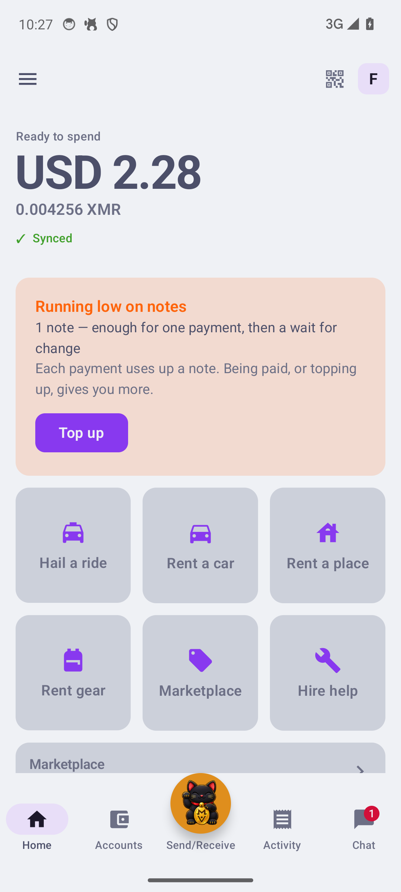
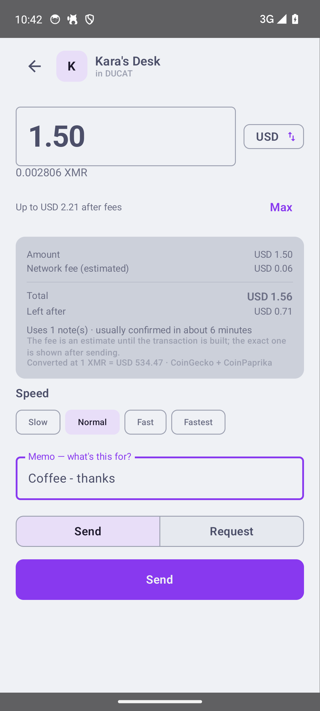
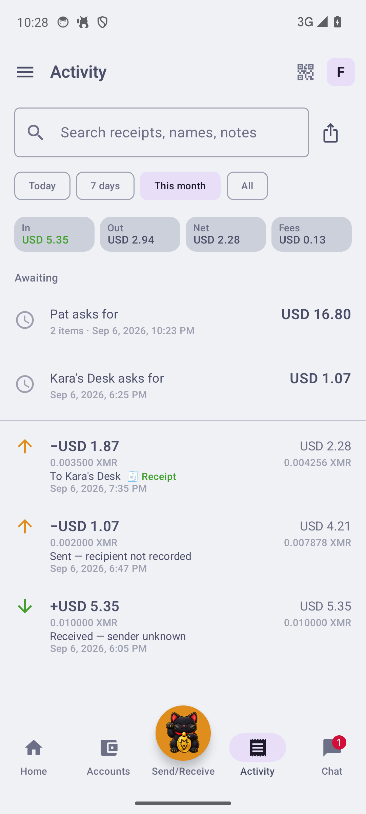
Paying shows the amount, the estimated network fee, the total, what you have left afterwards, how many notes it spends and roughly how long it will take — and lets you pick a speed. History is rebuilt from the chain: sends identified by key image, change never shown as income, every row carrying the running balance.
Monero spends discrete notes rather than a balance, so a wallet holding one big note can be unable to pay twice in a row. The app counts the notes it can spend and tells you to break one before you are standing at a counter, rather than failing there.
Pick a mode and the entire app hands over — its own tabs, nothing of the wallet's. Almost none of it needed a new wire object, which is the spec's proudest sentence.
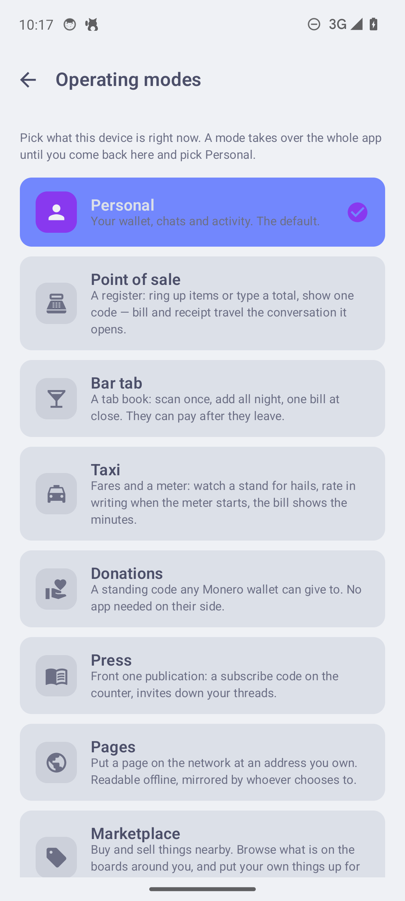
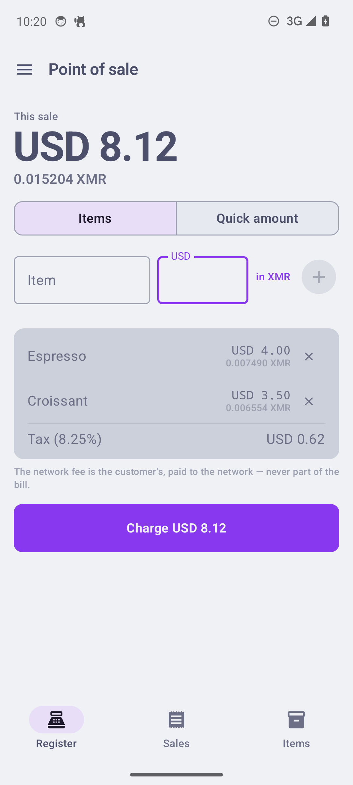
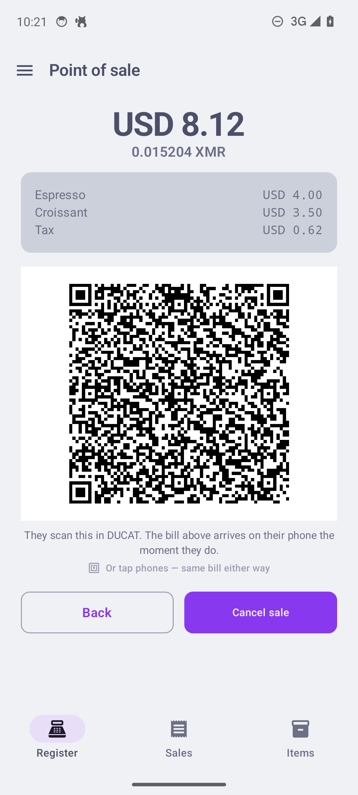
Type where you are going. Your phone turns a GPS fix into a geocell — a public bulletin board whose address is the place itself — and posts a hail: a claim-once card, a destination, and an offer priced from the real driving route. Drivers watch their cell and its neighbours and claim it; the DHT referees the race, and no matchmaker exists.
The green line is the point: DUCAT's rates sit about 15% under a rideshare's rider-side rates, and the driver keeps all of it — the absent platform cut, handed to both of them. Acceptance arrives with a face on it: name, car, colour, plate, ETA.
One trade, stated plainly on screen: address search, routing and map tiles query OpenStreetMap — the single place DUCAT sends location off-device. The boards themselves never carry better than ~1.2 km.
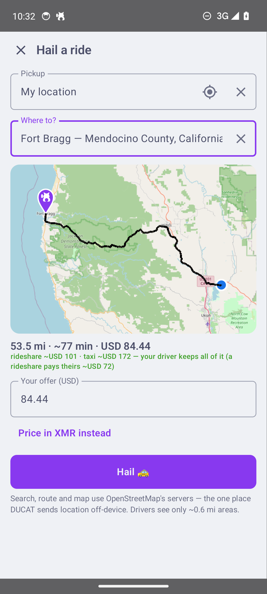
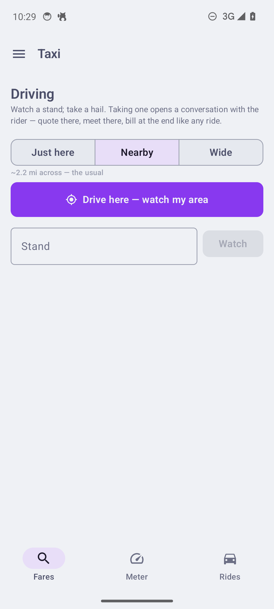
Listings work like hails, on coarser boards — about five kilometres across, because people will travel to collect a set of keys. The form is split in two and the app tells you which half is which: the public part goes on a board anyone nearby can read, and the address, the keys and the plate never leave your phone until a booking is real.
Searching reads your board and the ring around it, drawing results as each board answers — a car parked near you is on screen in under six seconds.
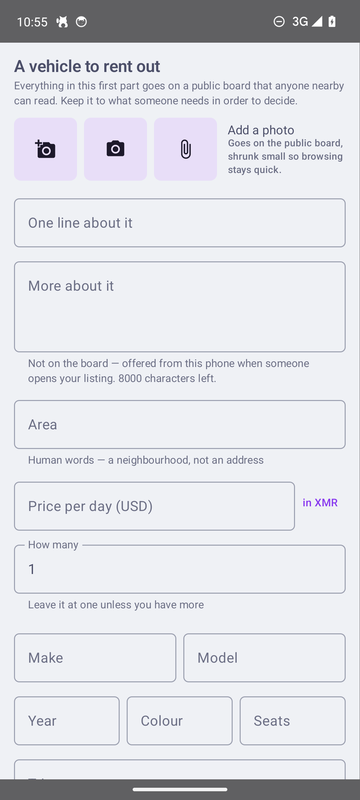
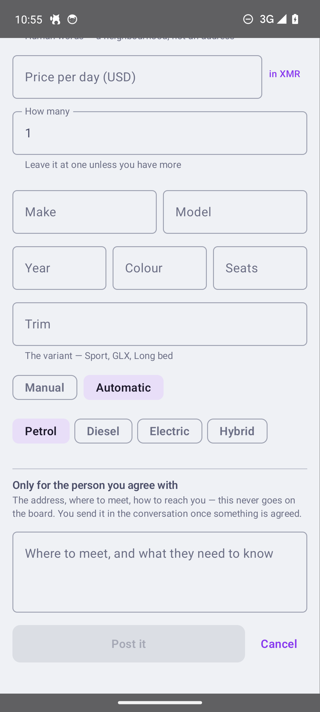
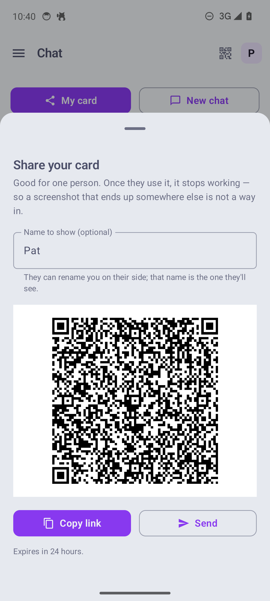
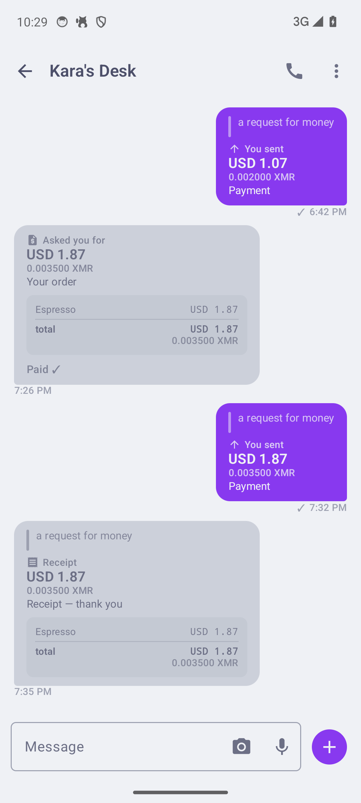
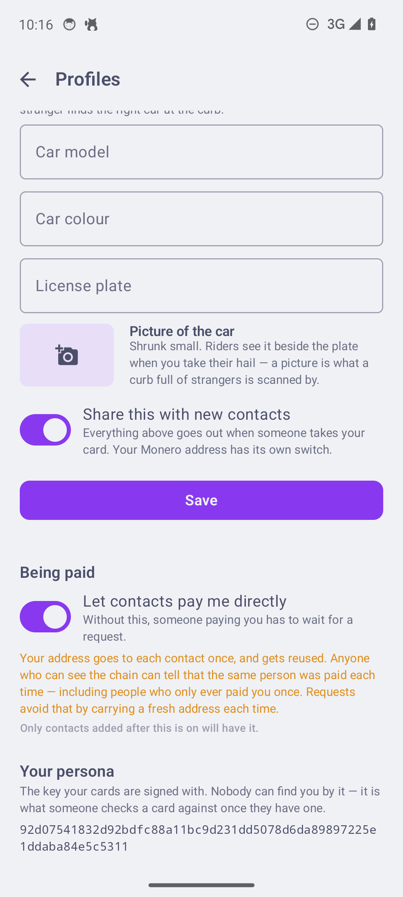
There is no company in the middle to take sides, so DUCAT does something simpler. The money sits in an address only the two of you can open, and the release hands each side their own stake back by name. Nobody can take a stake — including us, because there is no us to pay.
Those numbers are argued rather than guessed — Bisq's 2-of-2 no-custodian model is the closest working precedent, and the dual-deposit literature proves the arrangement cheat-proof at equilibrium. Two bounds fall out: a stake worth less than the fee to return it becomes zero rather than decoration, and none exceeds half the price. The exposed side funds second, so their money never sits alone in a shared address.
When a deal wants more than a bond: rider, driver and a mutually trusted arbiter contact run a distributed key generation over the sealed thread — three devices derive one Monero address, each holding only a share, any two able to sign, no dealer anywhere. The happy path is two taps.
Anything else is a settlement: either side proposes a split, the other signs or counters. A stranded party asks the arbiter, whose co-signature is the ruling — a captured arbiter can at worst pick between the named parties, never pay itself. Chain-proven on stagenet in every shape, including a two-input FROST release.
The README keeps a ledger of what has actually run end-to-end on the live network and live stagenet — and states the gaps rather than burying them.
core/Every build is debug-signed and settles on Monero's stagenet — coins with no value, by design. The spec is draft 0.90 and says of itself: nothing here is final, and §14 is the real agenda. Try it, break it, read it — just don't fund it.
ducat-protocol.md is the primary artifact — five parts,
a changelog first, and a conformance suite that a second implementation runs so the
document cannot drift from the code silently.
★ ducat-protocol.md the spec — draft 0.90, changelog first core/ reference implementation (Rust) vectors/ 328 conformance cases + schema conformance/ four checkers, run on every push harness/ end-to-end over real Veilid routes sim/ offline simulator, market scenarios applications/ android/ + desktop/ (same sources) mobile/ the Rust bridge: wallet · mailbox · node research/ evidence, not product
schema.jsonStewardship is normative, not aspirational: §18.7 makes Veilid's ethic a conformance requirement — no protocol fees, no node payment, ever. Build anything you like from this code, but a client that monetizes carriage is not DUCAT.
Your identity is a keypair made on the device. The last onboarding step is the backup, because a wallet you cannot restore is the one way a person actually loses money here.
Phone browser, newest build, no release page to navigate. armeabi-v7a
only for phones older than about 2016; x86_64 is for emulators.
DUCAT Desk — the same application on a bigger screen, and a shopkeeper's window. Carries its own Rust library and JVM.
Unsigned — Windows will warn on first open. It has played bar counter, driver, and standing escrow arbiter.
Apple Silicon and Intel builds. Unsigned — macOS will warn on first open.
Debug-signed, stagenet only — not for real money. Every screenshot on this page is the app running on a phone, not a mockup.